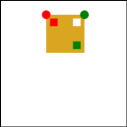
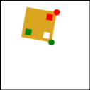
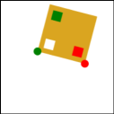
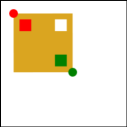
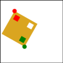
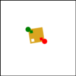

Over the past few pages, you saw the connection between the math of transformations the code we write to draw using Canvas. On this page, you'll get to try writing some code to test it out.
For this page, you should edit the file 4-Matrix-Exercise.js. The functions you have to change are at the beginning of the file. Feel free to read the rest of the code - but please don't change it.
Given two points, we want to map the square (0,0) - (10,10) such that the (0,0) corner appears at the first point, and top right corner (10,0) corner appears at the second point. The square should remain a square - it can turn and stretch uniformly, but it should not reflect (notice that the insides of the square are not symmetric).
I wrote some UI code that draws the square, and draw a red dot for the first point and a green dot for the second point, and lets you move the points around. All you need to do is fill in the function twoDots1 with the code that performs the transformation. It should consist of calls to context.translate, context.rotate, and context.scale. I put in a context.translate just to get you started. You can drag around the dots to make sure your code works (the graders will do it).
Here are some snapshots of what this looks like when it is working.
  
Now, do that again, but this time do it using context.transform - compute the 6 numbers that need to be passed. Do this in the twoDots2 function. I put some example values in that don't work correctly.
This is same as box 1 - except that the corner opposite the upper left (e.g., the 10,10 corner) should appear at the green dot. Your choice how you make the transformation - but make sure it keeps the square a square. The function to edit is twoDots3.
Here are some snapshots of what this looks like when it is working:
  
In the code for this box (drawBox3), each of the squares is placed by a sequence of rotate, translate, and scale commands. Replace these with a single transform command that does the same thing. You should comment out all of the rotate, translate, and scale calls in drawBox2, and put proper numbers into the transform calls. The picture shouldn't change at all. Pay attention to the dots in the square.
Shear (sometimes called skew) is a fundamental linear transformation. It is discussed in both textbooks (but specifically Section 6.1.2 of Fundamentals of Computer Graphics FCG4_Ch06.pdf). Unfortunately, Canvas doesn't have it.
Put "shear-x" transformation into the shearX function in 4-Matrix-Exercises.html. The code for the following Canvas calls that function to test it. Since the shearX does nothing right now, you see squares here. If you implement things correctly, you should see sheared boxes. The test code does save and restore - you should make shearX work like context.rotate (except that its a function not a method).
OK, a little math programming... Now on to the next page.